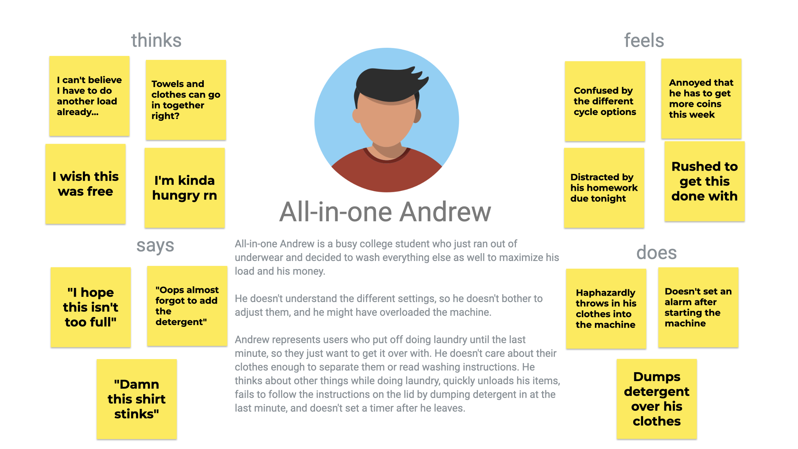
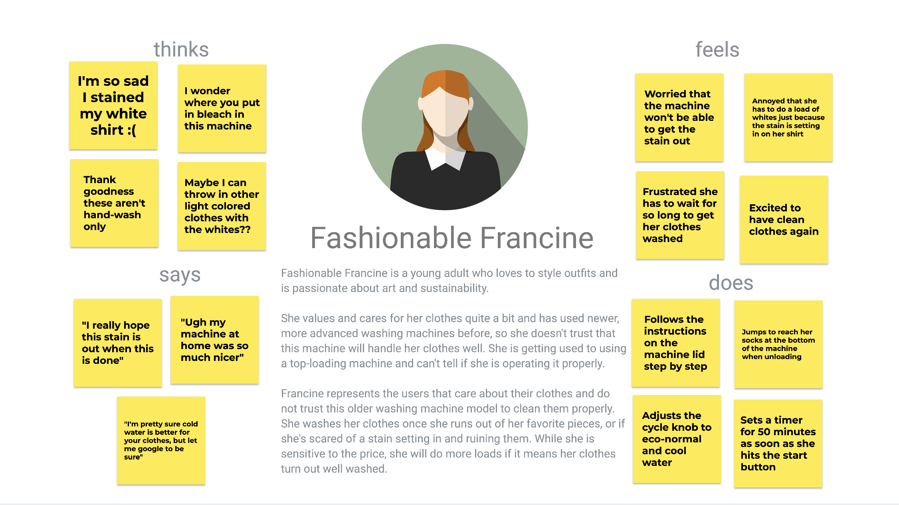
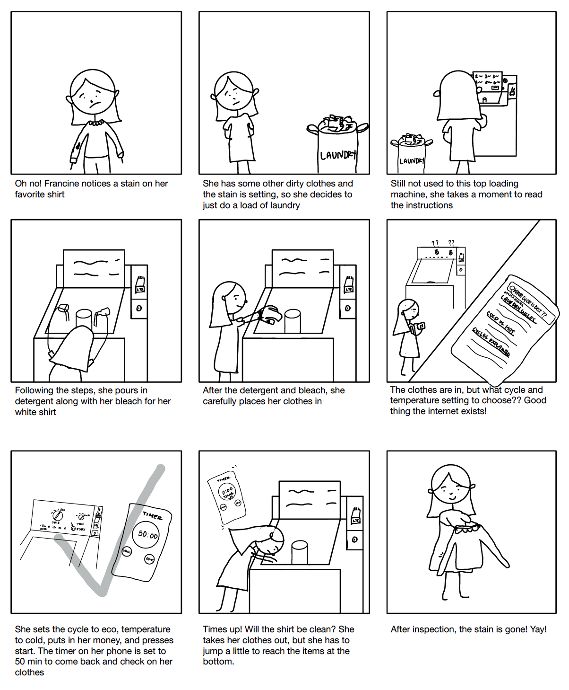

Washing Machine Personas & Storyboarding
An investigation into the trials, tribulations, and triumphs of the public laundry users in Providence, RI
Observations
Some key takeaways after observing and interviewing 3 laundry machine users
Key Learnings
- Most people do not read the instructions below the lid before putting in their laundry.
- People tend to fill the laundry to the max.
- It takes around 6min/person to use the machine from approaching it to leaving.
- People tend to put in clothes before detergent, don't change the knobs, put coins in last, then press start.
- The laundry machine doesn't have a timer. All but one of the people observed set a timer on their phones after pressing start.
- Unloading the machines requires shorter people to jump to reach the bottom.
- Every person left the lid open after taking their clothes out.
Questions
- Have you used another washing machine before using this one?
- How many times have you used this washing machine in the past month?
- What factors determine for you if its is time to do laundry?
- Walk me through your process using the washing machine from start to finish.
- Is the machine done washing when you return to check on it?
- Have you experienced any frustrations when operating the washing machine?
- If so, what were they?
- After using the washing machine, do you trust that your clothes are clean (no stains or smells)?
- Why or why not?
- Thinking about other washing machines you have used, are there any features in the other machines you wish this machine had?
- If so, which features?
Summarized Responses
- Everyone has used another washing machine before that has had features missing in this machine including a timer, front-loading or clear door, quick wash setting, and beep when done.
- Most people have a certain category of clothing that when it runs out, they need to do a load of laundry.
- Some people trust that the machine cleans their clothes while some don't due to the fact that the machine looks old, and it is completely opaque, so you cannot see the clothes being cleaned.
- Most people either use the normal or eco setting, don't adjust the temperature, set timers ranging from 30-50 minutes, then leave and come back to laundry that is done.
- The main complaint about the laundry machine is it costs too much money to use.
Personas
Empathy maps for archetypal washing machine users created from observations


Storyboard
The final product: a deeper dive into Fashionable Francine and her journey to clean her shirt

I had such a fun time creating the final storyboard and going through the user research process.
Cheers to clean clothes and varied laundry habits!
🧺